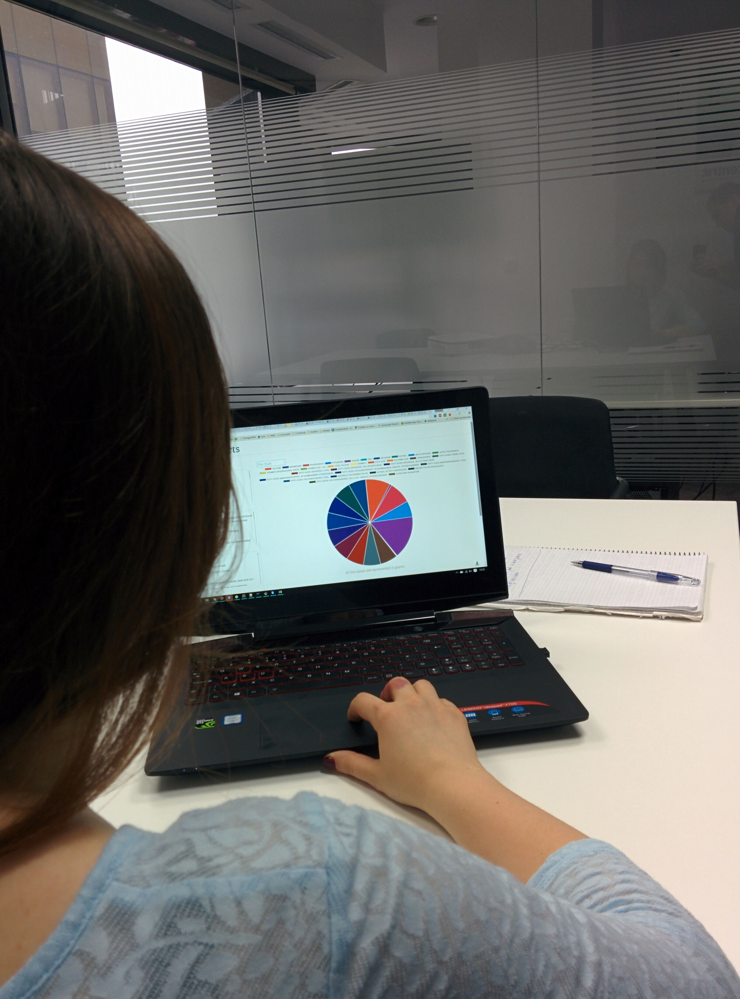

Test Plan for: FoodCharts Filtering and export data
Persona Type Tested: Primary
Andreea
Context: office room
Duration: 5 minutes
Complete the following before starting: Greeting and Consent & User Background Information.
Overall Objectives
List the objectives/goals of the usability test; what you want to study or to evaluate. Be specific in what you want achieve, to evaluate with this test (e.g. obtain quality or quantitative regarding certain product/application components, accessibility evaluation, heuristic evaluation, cognitive walk-through etc.).
FoodCharts objectives:
- Primary goal is to improve the usability of a product.
- Identify how intuitive are the filtering controls, for a user that sees them first time.
- Evaluate the positioning on page and the interaction that the user will have with the menus, filters and diagrams.
- Observe user capacity to understand how filters work and the capacity un understand data from diagrams.
- Observe user response to the color palette and scheme.
Scenario
Use one scenario for each test. Do not use multiple scenarios for a usability test as it can confuse and frustrate the user. The scenarios used in the usability tests have a direct connection with the scenarios built for the personas document.
FoodCharts scenario: The user will access the application, select food category, apply filters and visualize/download data from diagram.
Tasks
Write out the tasks for each persona type. Avoid complex tasks. Make sure the user is able to complete the test in the specified time interval. Assign an estimated completion time for each task.
A user might complete a task in a shorter or greater time than the estimated time. If the completion time exceeds the estimated time then it there is a problem. Also a user might skip the current task thus the completion time would be 0.
FoodCharts tasks:
- Access application and select category - 30 seconds;
- Access filter menu and select filters (understand relation between selecting a filter and the showed result) - 45 seconds;
- Apply filter to view the nutritional value for 3 favourite food types - 2 minutes;
- Change diagram type to have a different visualisation for the data - 30 seconds
- Download diagram and save it locally on the computer - 30 seconds
- Access settings page and change font option - 20 seconds
Post-test Questions
FoodCharts questions:
- Question 1: Did you find hard to reach the filtering panel? No
- Question 2: How hard was it to understand the correlation between a selected filter and the diagram? Not hard to understand
- Question 3: How hard was it to find a filter that you want, when you tried to view the nutritional value for your favourite food? Not looking something in particular
- Question 4: Did you notice that you have the option to select from multiple diagram types, when you first time accessed the page? Yes
- Question 5: Do you think the color scheme of the application fits the application domain? Didn't observ the color scheme. It's basic.
- Question 6: Do you have any issues to distinguish the colors from the diagram? No
- Question 7: How hard was it to understand data from the diagram? Not hard, figured out it's about the nutrients and to compare them
- Question 8: Do you think that the application showed interesting and helpful data? If you are interested in subject, yes.
Notes for Test Coordinator
- Remind the user that you would like them to 'think aloud' so that you can understand what they are thinking, about the task or the product/application;
- Read the user the scenario for the test;
- Read the user the tasks he has to complete. If the tasks are complex, you may want to put a sheet of paper in front of the user with each task written out;
- Record the user's actions, comments, questions, and body language (write them in the Test Observations section accompanied by video/audio).
- Don't offer help; let the user attempt to perform the task. If they ask for help reply with: "What do you think you/that would do?" "What do you think that means?".
References
- Fluid User Testing;
- usability.gov Templates;
- Handbook of Usability Testing by Jeffrey Rubin;
- A Practical Guide to Usability Testing by Joseph S. Dumas and Janice C. Redish.
Other Notes
Written/video/audio notes done attached to the usability test. These notes reflect the user thoughts and frustrations.
Andreea didn't express to much while testing. She saw that the filters applied on the food items. She saw the download button and used it. She liked that you can compare multiple foods and see a lot of data.
